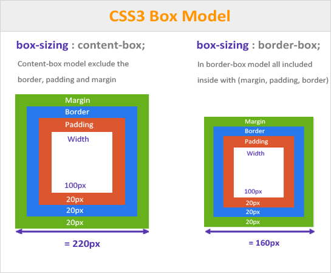

1.Beskriv boxmodellen och ge en kort förklaring av var och en av de egenskaper som ingår i den.
Svar: Boxmodellen är en funktion som man kan använda för att ha t.ex en informations ruta sen kan man ha flera olika boxar med h1 och p
2.Beskriv också skillnaden mellan värdena content-box och border-box för egenskapen box-sizing
Svar:Border-box betyder att man sätter en ram runt en box som kan vara olika storlekar
Svar: Conetent box det betyder att man kan sätta mottet på boxen man har med den funktionen
